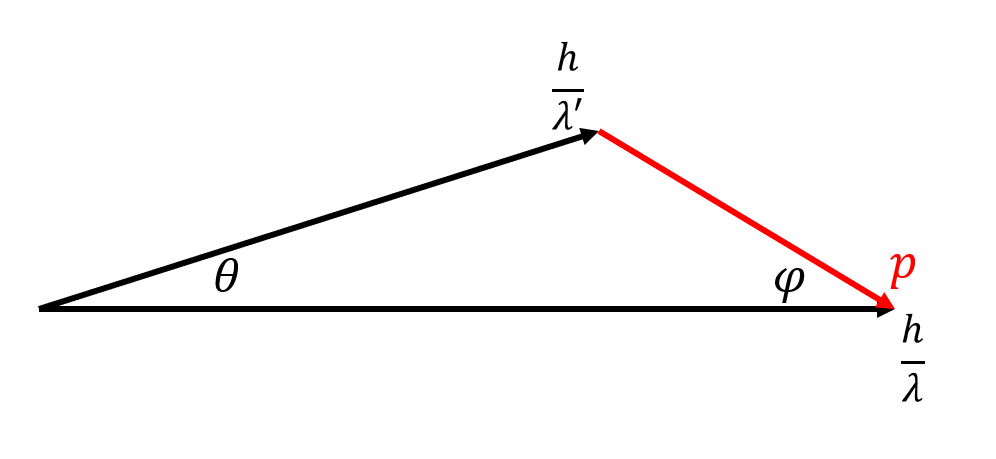

量子力学简记
这是对量子力学学习的简单记录。 注：本笔记中的量子力学仅仅来自于大学物理学习，仅仅用了20个学时左右，对量子力学知识理解的深度与广度及其浅显。需要谨慎阅读。
下面是本文的目录，可以点击后直接跳转。
量子力学诞生前的若干背景
热辐射
Kirchhoff辐射定律指出：物体的辐射能力 ∝ 吸收能力。具体而言，物体的辐射能力与其温度、材料有关。
由此，引申出绝对黑体的概念。绝对黑体满足： 辐射能量=吸收能量 。需要特别注意，黑体也是可以并非真的“黑”，由于它将辐射出相同能量的电磁波，黑体也是可以发光的。
定义单位时间内单位面积辐射出的能量为辐出度（亦被称为功率密度，感觉是更直白的叫法），记作 M 。
Stefan-Boltzman定律指出，对于黑体而言，有：
M=σT4, σ=5.67×10−8 W/m2/K4
同时，人们对黑体在同一温度下的 M−λ,M−υ 关系曲线进行了研究，得到了若干定律：
Wien位移定律指出，每个温度下都存在一个辐出度峰值波长 λm ，这也是随温度变化物体的颜色改变的原因。它与温度满足关系：
λmT=b, b=2.898×10−3 m⋅K
*同时，人们还对辐出度关于频率的曲线 M(υ) 进行了求解。基于函数拟合与经典热力学，分别得到了Wien公式与Rayleigh-Jems公式。然而，它们与实际情况的契合情况不尽如人意，尤其是后者在紫外区与实验结果产生的差异被称为紫外灾难。随后，在基于能量子的假设下，Planck推导得到了Planck黑体辐射公式：
M=c22πhekThυ−1υ3
Compton效应
Compton发现：当X射线射向物质时，有一部分出射的射线波长发生改变。设X射线射向一静止电子，记波长为 λ,λ′ ，X射线偏转角为 θ ，电子偏转角为 φ 且产生的动量为 p 。由动量守恒与能量守恒（注意：电子的速度可以很快，应使用相对论动能），可以列出如下方程组：
⎩⎨⎧λh=λ′hcosθ+pcosφλhsinθ=psinφλhc=λ′hc+E02+p2c2−E0
注：这个方程组并不好解，但是借助下面的动量三角形，利用余弦定理可以使求解更加清晰。（在求解时，需要注意非必要不使用 φ ，以免引入更多变量）

在最后一步带入 E0=mec2 ，可以得到：
Δλ=λ′−λ=mech(1−cosθ)
其中，称 λe=mech 为电子的Compton波长。
氢原子光谱
Balmer通过观察氢原子的谱线长度，总结出了从第一激发态发射出光谱波长的Balmer公式。若干年后，Rydberg总结得到了普适性的Rydberg公式：
λ~=λ1=R(nf21−ni21), R=1.097×107 m−1
氢原子的Bohr模型可以很好的契合此结果：
{nℏ=mvrrmv2=r2ke2
最终可以求解得到，氢原子内的能量是量子化的：
En=n2E1, E1=−13.6 eV
同时，与引力两体模型一样，动能和势能以及总能量的关系满足：
Ep=−2Ek, E=Ep+Ek
量子力学的萌芽
物质波
De Brogile提出，所有物质的运动均对应着物质波，其波长满足De Brogile关系：
p=λh
不确定关系
定义一个物理量 A 的不确定度为：
ΔA=A2−A2
Heisenburg指出，微观粒子的某几对物理量无法同时确定。粗略而言，有：
ΔxΔpx≥h, ΔEΔt≥h
量子力学的核心
波函数
量子力学的基本假设指出：波函数 ψ(x,t) 可以完全地描述一个粒子的状态。这个函数亦被称为概率辐函数，其模值表示概率密度。即：
p=∣ψ∣2=ψψ∗
波函数的标准条件为：
- 单值。
- 有限（平方可积）。
- 连续（同时偏导数连续）。
动量为 p ，能量为 E 的基本波函数写作：
ψ(x,t)=Aeiℏpx−Et
波函数有如下性质：
- 满足态叠加原理。即 ψ=c1ψ1+c2ψ2 ，此时称粒子位于 ψ1,ψ2 两个态的叠加态。
- 波函数乘以常数，所描述的粒子状态等价。即 ψ(x,t)⟺cψ(x,t) 。
对于第一个性质，可以利用Dirac的符号体系来描述量子态，如：
∣ψ⟩=c1∣ψ1⟩+c2∣ψ2⟩
对于第二个性质，常常需要对波函数进行归一化。即所有叠加态前的系数模值之和为1。以上述波函数为例，归一化后的波函数为：
∣ψ⟩=c12+c22c1∣ψ1⟩+c12+c22c2∣ψ2⟩
Schrodinger方程
经典物理中，用牛顿定律来描述 r,v 的演化。类似地，量子物理中，使用Schrodinger方程来描述 ψ 的演化。
事实上，Schrodinger方程即为关于波函数的能量守恒方程。其形式为 动能+势能=总能量 。这里仅仅给出Schrodinger方程的形式，不做其余解释。
含时情形（一维）：注：如果是多维情况，把对 x 偏导替换为 ∇ 即可。
−2mℏ2∂x2∂2ψ+Epψ=iℏ∂t∂ψ
对于不含时的情形，等式右侧部分的总能量为定值。同时，为了进行简记（在含时的情况下也可简记），引入Hamilton算符：
H^=−2mℏ2∂x2∂2+Ep
此时的Schrodinger方程可以写作：
H^ψ=Eψ
一些场景
一维无限深方势阱
在这个情况下，空间中的势能满足：
Ep={0∞0<x<ax≤0,x≥a
- 在 x≤0,x≥a 时，粒子不可能出现，ψ=0 。
- 在 0<x<a 时，Schrodinger方程可以写作：
−2mℏ2dx2d2ψ=Eψ
这个微分方程的形式与简谐振动完全相同，其通解为：
ψ(x)=Acos(ℏ2mEx+φ)
- 由归一化条件，∫∣ψ∣2dx=1 ，从而有 A=a2 。
- 由连续性边界条件，ψ(0)=ψ(a)=0 ，从而有 φ=−2π 且 ℏ2mEa=nπ 。
由后者，可以解得：
En=2ma2n2π2ℏ2
这便是能量量子化。每个 n 对应着一个 En ，这便是能量本征值。最终可以解得，此势阱中的本征波函数为：（对于其他的波函数，带入Schrodinger方程也可以求得其对应的能量）
ψ(x)={a2sinℏ2mEx00<x<ax≤0,x≥a
此时，可得粒子的动量大小为： pn=2mEn=2anh=anπℏ，对应的波长为 λn=n2a 。
一维谐振子
在此情况中，粒子的势能为 Ep=21mω2x2 。
最终可以求得，势场下的本征能量为：
En=(n+21)ℏω
氢原子
为了简化运算，通常用球坐标来写出Schrodinger方程。运用数学技巧，最终可以转化为 r,θ,φ 三个分量的独立微分方程。在这里，不对具体的求解进行解释，仅仅给出由求解结果得到的若干量子化结论。
对于第 n 种状态，角动量量子化满足：
L=l(l+1)ℏ, l=0,1,…,n−1
其中 l 被称为角量子数。
同时，考察 z 方向的角动量分量，其满足：
Lz=mlℏ, ml=0,±1,…,±l
在塞曼效应中， ml 决定了可被观测到的磁矩大小，故被称为磁量子数。
在径向上，波函数解的形式满足：
R(r)=Ce−r/a0
其中 a0 为Bohr半径，对应Bohr理论中电子的半径，同时也是波函数得到的概率最大位置。
需要特别注意，求解径向概率时，计算式为：
p(r)=∣R(r)∣2⋅r2⋅dr
电子的自旋
Stern Gerlach实验将电子通过磁场，证明了电子存在自旋。
与电子公转的角动量类似，自旋角动量满足：
{S=s(s+1)ℏSz=msℏ
其中，s,ms 与粒子的类型有关。电子都是Fermi子，其 s=21,ms=±21。由此可得，电子自旋的夹角为：
cosθ=SSz=±33
算符
算符的定义
在量子力学中，每个力学量都可以看作算符。算符是一种线性变换（类似矩阵），它将波函数转换成了另外一个函数。算符一般记作 A^ 。
算符有如下性质：
- 加法分配律： (A^+B^)ψ=A^ψ+B^ψ。
- 乘法分配律： (A^B^)ψ=A^(B^ψ) 。
- 不满足交换律： (A^B^)ψ=(B^A^)ψ 。
算符的对易
特别地，若 A^B^=B^A^，称两个算符是对易的。判断是否对易，只需将两者作用于波函数 ψ 上即可。
定义对易括号为：
[A^,B^]=A^B^−B^A^
在量子力学中，如果两个算符是对易的，则两者对应的力学量可同时确定。否则，两个力学量满足不确定关系。
算符与平均值
力学量对应的算符均为Hermit算符。对于这种算符，其平均值计算可写作：
Aˉ=⟨ψ∣A∣ψ⟩=∫−∞+∞dτ ψ∗(A^ψ)
需要注意，应该先对波函数应用算符，再将其与波函数的共轭相乘。
常见力学量的算符
位置算符即简单的相乘，即 x^ψ=xψ。
对于动量算符，有：
p^=−iℏ∇
同时，动量与能量之间仍然满足 Ek=2mp2。因此，动能算符为：
E^k=−2mℏ2∇2
*与力学中的知识类似，借助动量与位置，可以定义角动量。例如：
Lz=xpy−ypx
*利用角动量自己的两个分量也可以定义另一个分量。例如，可以证明：
[L^x,L^y]=iℏL^z